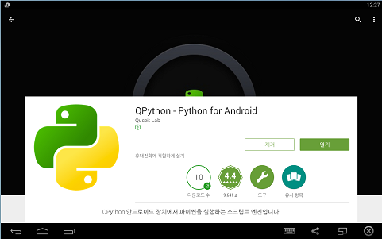

이제 파이썬이라는 언어를 갖고 놀아보고 싶은 마음이 드셨나요?
저는 공부한다는 말보다는 논다는 것이 더 마음에 드는군요. 재미있으니까요.
파이썬을 써보려면 파이썬 개발 도구가 필요합니다.
리눅스, 맥 환경
리눅스나 맥을 쓰시는 분들은 파이썬이 이미 설치되어 있을 것입니다. 터미널에서 python이라고 쳐보세요.
$ python
Python 2.7.3 (default, Sep 26 2012, 21:51:14)
[GCC 4.7.2] on linux2
Type "help", "copyright", "credits" or "license" for more information.
>>>
윈도우에서 파이썬 설치하기
일반적인 설치
Windows를 쓰시는 분들은 다음 주소에서 파이썬 설치 프로그램을 내려받으실 수 있습니다. 다양한 라이브러리를 사용하기 위해서, 64 비트 Windows 운영체제를 사용하시더라도 32 비트 용을 설치하시는 것이 좋습니다.
- Python 2.7.10 Windows Installer [https://www.python.org/ftp/python/2.7.10/python-2.7.10.msi]
파일을 받으셨으면 바로 설치해주시면 됩니다. 특별히 건드리실 것 없이 'Next' 버튼을 계속 눌러주세요.
- 파이썬 설치 동영상 보기 [http://www.youtube.com/watch?v=ZQRlS_f0_cQ]
과학, 수학, 데이터 분석 목적의 배포본 설치
과학 계산용으로 널리 사용되는 파이썬 패키지들을 쉽게 관리할 수 있는 배포본도 있습니다.
- Anaconda [http://continuum.io/downloads.html]
- Canopy [https://store.enthought.com/downloads]
Anaconda나 Canopy를 설치하신 분은 하트 그리기를 따라해보세요.
* 5.4. matplotlib으로 하트 그리기 [https://wikidocs.net/65]
웹브라우저에서 사용하기
파이썬 공식 홈페이지의 첫 화면에 있는 노란색 Launch Interactive Shell 아이콘을 클릭해보세요. 아래 그림과 같은 파이썬 셸이 뜰 거예요. 버전이 3.X로 높기 때문에 2.7과는 약간 차이가 있답니다.

안드로이드 기기에 설치하기
안드로이드 기기에서도 파이썬 코드를 작성하고 실행할 수 있답니다. Play 스토어에서 QPython을 설치해보세요.
